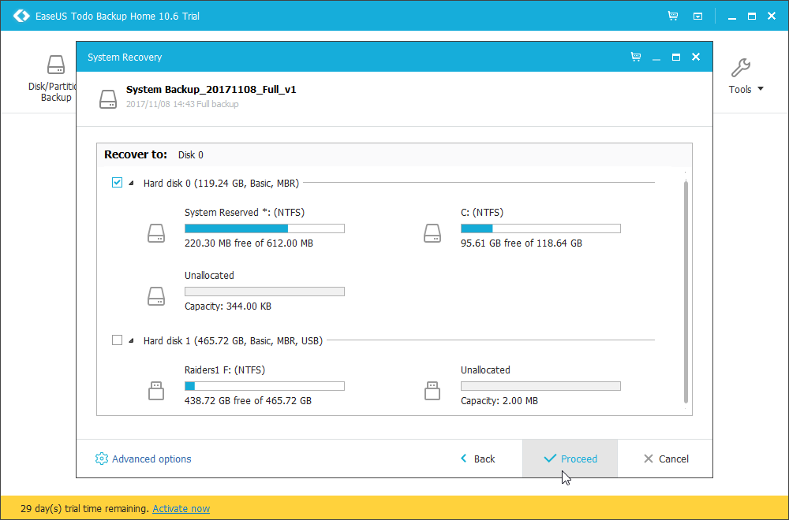
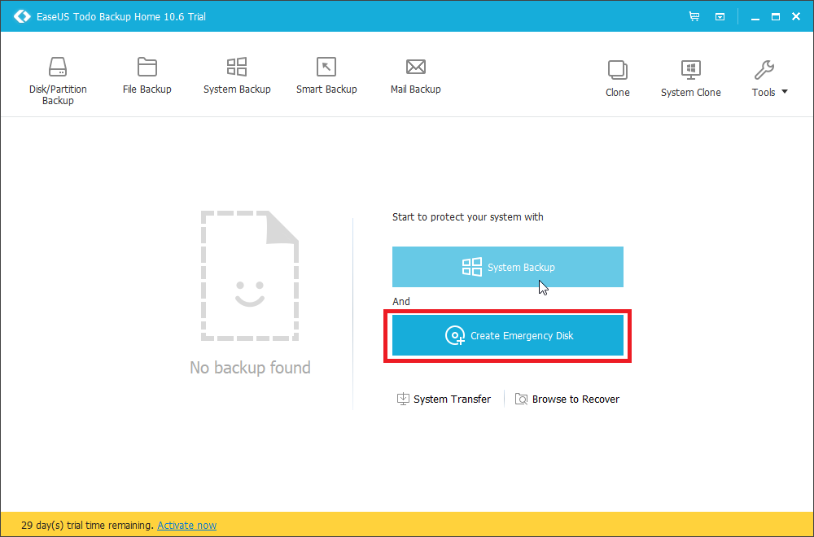

Steps to Create backup image of your computer and install onto new disk
- uninstall/ delete unnecessary files on computer. Delete windows.old if it exists
- you can delete it using Disk Cleanup. Click on clean up system files, and select previous windows version for deletion
- Backup your data using EaseUS Todo Home 10.6
- choose destination
IMPORTANT: Make sure to back up your image to external memory! Saving it locally can cause problems.

- under backup options you have control over image size, export speed, etc. 
- Create emergency disk 
- prepare your destination hard drive by deleting all partitions using Windows Disk Management
- You can also install EaseUS Partition Master Free which will give you more control
- check disk format of the one you have created the image from. You can check this in disk management, by right clicking on the disk
- If your disk is in MBR format, you will have the option that says "convert to GPT disk" and vice versa
- If your destination disk is different format, click on "covert to MBR/GPT"
- Locate your image on EaseUS Todo Home 10.6 by clicking on "Browse to recover"
- under advanced options, optimize for ssd if it applies